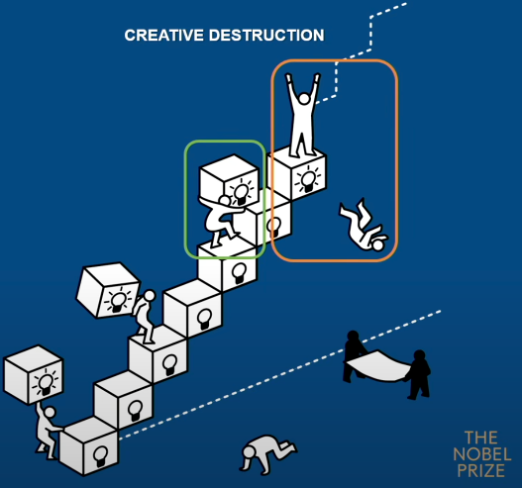
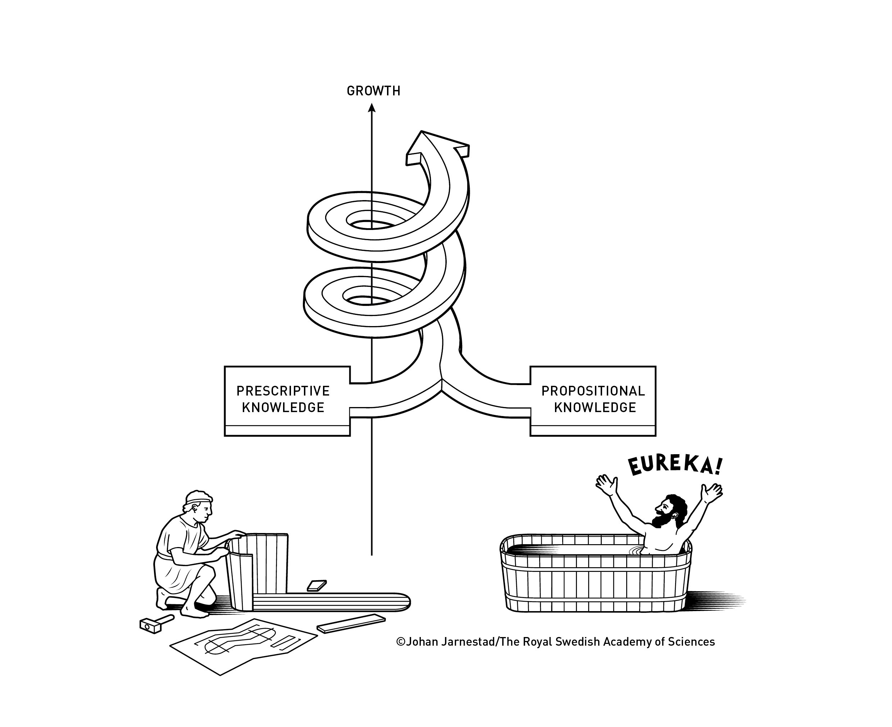
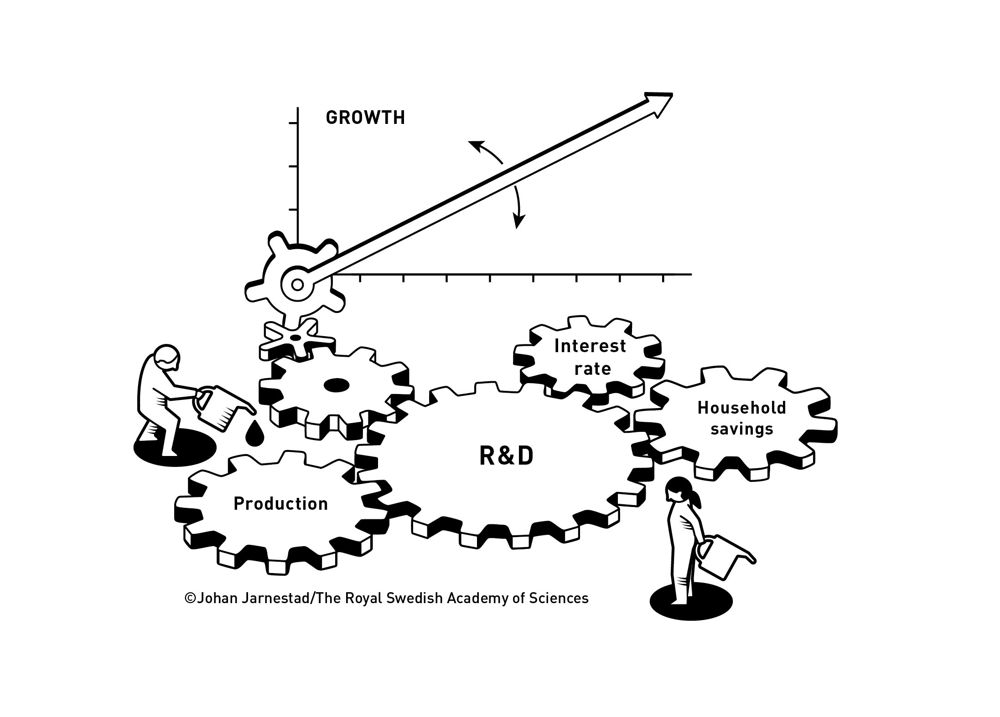

12 How New Technology Can Drive Sustained Growth
The Sveriges Riksbank Prize in Economic Sciences in Memory of Alfred Nobel has been awarded 57 times to 99 laureates between 1969 and 2025. Click on the links to get more information.
12.1 About the prize
In 1968, Sveriges Riksbank (Sweden’s central bank) established the Sveriges Riksbank Prize in Economic Sciences in Memory of Alfred Nobel. The prize is based on a donation received by the Nobel Foundation in 1968 from Sveriges Riksbank on the occasion of the bank’s 300th anniversary. The prize amount is the same as for the Nobel Prizes and is paid by the Riksbank. The first prize in economic sciences was awarded to Ragnar Frisch and Jan Tinbergen in 1969.
The prize in economic sciences is awarded by the Royal Swedish Academy of Sciences, Stockholm, Sweden, according to the same principles as for the Nobel Prizes that have been awarded since 1901.
12.2 Nobel Memorial Prize in Economic Sciences 2025
The Royal Swedish Academy of Sciences has decided to award the Sveriges Riksbank Prize in Economic Sciences in Memory of Alfred Nobel 2025 to Joel Mokyr, Philippe Aghion and Peter Howitt for having explained innovation-driven economic growth.

- “for having explained innovation-driven economic growth”
with one half to Joel Mokyr
- “for having identified the prerequisites for sustained growth through technological progress”
and the other half jointly to Philippe Aghion and Peter Howitt
- “for the theory of sustained growth through creative destruction”
12.2.1 Punch line
“The laureates’ work shows that economic growth is not automatic. We must preserve the underlying mechanisms of creative destruction to avoid falling back into stagnation.”
12.3 From stagnation to sustained growth
Did you know that economic stagnation, not growth, was the norm throughout most of human history?
Over the past 200 years, the world has witnessed more economic growth than ever before. Its foundation is the constant flow of technological innovation; sustained economic growth occurs when new technologies replace old ones as part of the process known as creative destruction. This year’s Laureates in Economic Sciences explain, using different methods, why this development was possible and what is necessary for continued growth.
Technology advances rapidly and affects us all, with new products and production methods replacing old ones in a never-ending cycle. This is the basis for sustained economic growth, which results in a better standard of living, health and quality of life for people around the globe.
However, this was not always the case. Quite the opposite – stagnation was the norm throughout most of human history. Despite important discoveries now and again, which sometimes led to improved living conditions and higher incomes, growth always eventually leveled off.
12.3.1 What Is Stagnation?
Economic stagnation is a period characterized by slow or no growth, often with high unemployment, affecting both macroeconomic scales and specific sectors. Typically marked by a GDP growth rate of less than 2-3%.
Key Characteristics and Causes:
- Low Growth & Employment: GDP growth is consistently minimal or non-existent, frequently accompanied by high unemployment rates.
- Stagnant Wages: Income levels for workers fail to rise, limiting consumer purchasing power and demand.
- Lack of Investment/Innovation: Businesses may reduce investment, and innovation slows down, often caused by structural issues or an aging workforce.
12.3.2 The forces behind progress
2025 economic sciences laureates Joel Mokyr and Philippe Aghion reveal the forces behind progress, and discover how ideas, innovation and a touch of creative destruction sparked the greatest boom in human history.
12.3.3 Economic growth cannot be taken for granted
“The laureates’ work shows that economic growth cannot be taken for granted. We must uphold the mechanisms that underly creative destruction, so that we do not fall back into stagnation,” says John Hassler, Chair of the Committee for the prize in economic sciences.
To illustrate, consider their metaphorical “innovation ladder.” Firms climb this ladder by investing in R&D, while others fall off as new technologies render them obsolete. The process is painful but necessary: without turnover, there is stagnation.

12.3.4 The new normal
Economists measure economic growth by calculating increases in gross domestic product (GDP) but, actually, it involves much more than just money. New medicines, safer cars, better food, more efficient ways of heating and lighting our homes, the internet and increased opportunities for communication with other people over greater distances – these are just a few of the things included in growth.

However, as we have said, economic growth based on technological development was not the historical norm – quite the opposite. One example of this is the trend in Sweden and Britain from the early 14th century to the start of the 18th century. Income sometimes rose and sometimes fell but, overall, there was almost indiscernible growth, despite important innovation occurring.
These discoveries thus had no noticeable effect on long-run economic growth. According to Mokyr, this is because the new ideas did not continue to evolve or lead to the flow of improvements and new applications that we now take for granted, as a natural consequence of major technological and scientific advancements.


Instead, when we look at economic growth in Britain and Sweden from the start of the 19th century to the present day, we see something entirely different. Apart from easily identifiable episodes such as the Great Depression in the 1930s and other crises, growth – rather than stagnation – has become the new normal. A similar pattern, with sustained annual growth of almost two per cent, arose in many industrialised nations after the early 19th century. It may not sound like much, but sustained growth at that level means a doubling of income over a person’s working life. Eventually, this has a revolutionary effect on the world and on people’s quality of life.
12.3.5 Useful knowledge
So – what creates this sustained economic growth? This year’s laureates used different methods to answer this question. Through his research in economic history, Joel Mokyr has demonstrated that a continual flow of useful knowledge is necessary. This useful knowledge has two parts: the first is what Mokyr refers to as propositional knowledge, a systematic description of regularities in the natural world that demonstrate why something works; the second is prescriptive knowledge, such as practical instructions, drawings or recipes that describe what is necessary for something to work. Mokyr shows that prior to the Industrial Revolution, technological innovation was primarily based on prescriptive knowledge. People knew that something worked, but not why. Propositional knowledge, such as in mathematics and natural philosophy, was developed without reference to prescriptive knowledge, which made it difficult, even impossible, to build upon existing knowledge. Attempted innovations were often haphazard or had approaches that someone with adequate propositional knowledge would have understood were futile – such as building a perpetual motion machine or using alchemy to make gold.

The 16th and 17th centuries witnessed the Scientific Revolution as part of the Enlightenment. Scientists began to insist upon precise measurement methods, controlled experiments, and that results should be reproducible, leading to improved feedback between propositional and prescriptive knowledge. This increased the accumulation of useful knowledge that could be utilised in the production of goods and ser- vices. Typical examples include how the steam engine was improved thanks to contemporaneous insights into atmospheric pressure and vacuums, and advances in steel production due to the understanding of how oxygen reduces the carbon content of molten pig iron. Gains in useful knowledge facilitated the improvement of existing inventions and provided them with new areas of use.
The Second Industrial Revolution, also known as the Technological Revolution, was a phase of rapid scientific discovery, standardization, mass production and industrialization from the late 19th century into the early 20th century.
12.3.6 From theory to practice
However, if new ideas are to be realized, practical, technical and, not least, commercial knowledge are all necessary. Without these, even the most brilliant ideas will remain on the drawing board, such as Leonardo da Vinci’s helicopter designs. Mokyr stressed that sustained growth first occurred in Britain because it was home to many skilled artisans and engineers. They were able to understand designs and transform ideas into commercial products, and this was vital in achieving sustained growth. Reduced resistance to change
Another factor that Mokyr claims is necessary for sustained growth is that society is open to change. Growth based upon technological change not only creates winners, it also creates losers. New inven- tions replace old technologies and can destroy existing structures and ways of working. He also showed that this is why new technology is often met with resistance from established interest groups who feel their privileges are threatened.
The Enlightenment brought a generally increased acceptance of change. New institutions, such as the British Parliament, did not provide the same opportunities for those with privilege to block change. Instead, representatives from interest groups had the opportunity to gather and reach mutually benefi- cial compromises. These changes to societal institutions removed a major barrier to sustained growth.
Propositional knowledge can sometimes also contribute to reducing resistance to new ideas. In the 19th century, Hungarian physician Ignaz Semmelweis realised that maternal mortality rates dropped drastically if physicians and other staff washed their hands. If he had known why and been able to prove the existence of dangerous bacteria that are killed by handwashing, his ideas may have had an earlier impact.
12.3.7 Growth – a transformative process
Joel Mokyr used historical observations to identify the factors necessary for sustained growth. Instead, inspired by modern data, Philippe Aghion and Peter Howitt constructed a mathemati- cal economic model that shows how technological advancement leads to sustained growth. These approaches are different, but fundamentally they deal with the same questions and phenomena. As we have seen above, economic growth in industrialised nations such as Britain and Sweden has been remarkably stable. However, below the surface, the reality is anything but stable. In the US, for example, over ten per cent of all companies go out of business every year, and just as many are started. Among the remaining businesses, a large number of jobs are created or disappear every year; even if these figures are not as high in other countries, the pattern is the same.
Aghion and Howitt realised that this transformative process of creative destruction, in which companies and jobs continually disappear and are replaced, is at the heart of the process that leads to sustained growth. A company that has an idea for a better product or a more efficient means of production can outcompete others to become the market leader. However, as soon as this happens, it creates an incentive for other companies to further improve the product or production method and so climb to the top of the ladder.
12.3.8 A groundbreaking model
A simplified description of some of the model’s important mechanisms would be that an economy includes companies with the best and most advanced technology; when these take out patents on their products they can be paid more than their production costs and thus profit from a monopoly. These are the companies that have moved to the top of the ladder. A patent offers protection from compe- tition, but not from another company making a new patentable innovation. If the new product or production process is good enough, it can outcompete the old one and further climb the ladder.
The potential to profit from a monopoly, even temporarily, creates incentives for companies to invest in research and development (R&D). The longer a company believes it can remain at the top of the ladder, the stronger the incentives, and the greater the investment in R&D. However, more R&D will lead to the average time to innovation decreasing, and the company at the top being pushed off the ladder. In the economy, a balance arises between these forces that decide how much is invested in R&D, thus also deciding the speed of creative destruction and economic growth.
Money for investment in R&D originates in households’ savings. How much they save depends on the interest rate which, in turn, is affected by the growth rate of the economy. Production, R&D, the financial markets and household savings are therefore linked and cannot be analysed in isolation. Economists call a model in which different markets are in balance a macroeconomic model that has general equilibrium. The model that Aghion and Howitt presented in their 1992 paper was the first macroeconomic model for creative destruction to have general equilibrium.

12.3.9 Welfare effects
Aghion and Howitt’s model can be used to analyse whether there is an optimal volume of R&D, and thus economic growth, if the market has free reign and there is no political interference. Previous models, which did not analyse the economy as a whole, could not answer that question. It turned out that the answer was far from simple, because two mechanisms pull in different directions. The first mechanism is based upon companies that invest in R&D understanding that their current profits from an innovation will not continue forever. Sooner or later, another company will launch a better product. From the perspective of society, however, the value of the old innovation does not disappear, because the new one builds upon the old knowledge. Outcompeted innovations thus have a greater value for society than for the companies that develop them, which makes the private incentives for R&D smaller than the gains to society as a whole. Society can therefore benefit from subsidising R&D.
The second mechanism looks at how, when one company succeeds in pushing another from the top of the ladder, the new company makes a profit while the old company’s profit disappears. The latter is often called “business stealing”, although it is of course not stealing in the legal sense. Therefore, even if the new innovation is only slightly better than the old one, profits may be significant and larger than the socioeconomic gains. Therefore, from a socioeconomic perspective, investments in R&D can be too large; technological development can be too rapid and growth too high. This cre- ates arguments against society subsidising R&D.
Which of these two forces dominates depends on a range of factors, which vary from market to market and time to time. Aghion and Howitt’s theory is useful for the understanding of which measures will be most effective and the extent to which society needs to support R&D.
12.3.10 Research led to more research
The model that Aghion and Howitt constructed in 1992 has led to new research, including the study of levels of market concentration, which involves the number of companies that compete with each other. The researchers’ theory shows that concentrations that are both too high and too low are bad for the innovation process. Despite promising advances in technology, growth has fallen in recent decades. One explanation for this, based on Aghion and Howitt’s model, is that some companies have become too dominant. More forceful policies that aim to counteract too much market domi- nance may be necessary.
Another important lesson is that innovation creates winners and losers. This not only applies to companies, but also to their employees. High growth requires a lot of creative destruction, which means that more jobs disappear and there is potentially high unemployment. Therefore, it is important to support people who are affected while making it easy for them to move to more productive workplaces. Protecting workers but not jobs, for example through a system that is sometimes called flexicurity, may be the right solution.
The laureates also demonstrate the importance of society creating conditions conducive to skilled innovators and entrepreneurs. Social mobility, where your profession is not decided by your parents’ identity, is thus important for growth.
12.3.11 Tools for future societies
Mokyr’s, Aghion’s and Howitt’s research helps us to understand contemporary trends and how we can deal with important problems. For example, Mokyr’s work shows that AI could reinforce the feedback between propositional and prescriptive knowledge, and increase the rate at which useful knowledge is accumulated.
It is apparent that, in the long run, sustained growth does not only have positive consequences for human wellbeing. First, sustained growth is not synonymous with sustainable growth. Innovations can have significant negative side effects. Mokyr argues that such negative effects sometimes initiate processes that uncover solutions to problems, making technological development a self-correcting process. Clearly, however, this often requires well-designed policies, such as in the areas of climate change, pollution, antibiotic resistance, increasing inequality and the unsustainable use of natural resources.
In conclusion, and perhaps most importantly, the laureates have taught us that sustained growth cannot be taken for granted. Economic stagnation, not growth, has been the norm for most of human history. Their work shows that we must be aware of, and counteract, threats to continued growth. These threats may come from a few companies being allowed to dominate the market, restrictions on academic freedom, expanding knowledge at regional rather than global levels, and blockades from potentially disadvantaged groups. If we fail to respond to these threats, the machine that has given us sustained growth, creative destruction, may cease working – and we would once again need to become accustomed to stagnation. We can avoid this if we heed the laureates’ vital insights.